|
Top Oss - RKC (1-1) 26 januari 2005 |
Top Oss
- RKC (1-1) 26 januari 2005
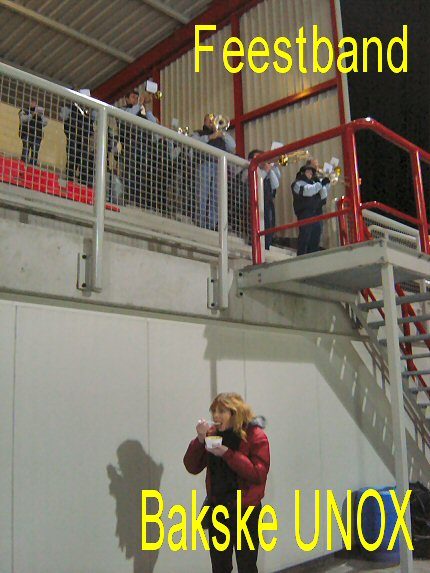
Top Oss bereikt niet vaak de achtste finale Amstelcup. Derhalve werd aan
deze wedstrijd een feestelijk karakter gegeven. In een hoek van de
hoofdtribune speelde een feestband en voor elke bezoeker was er een grote
bak erwtensoep van een plaatselijke levensmiddelengigant.
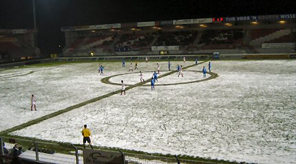
De grasmat was bedekt met aangevroren sneeuw. Alleen de lijnen
waren
sneeuwvrij gemaakt.
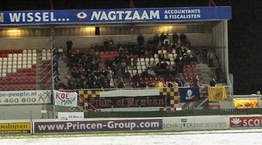
RKC was met krap 100 supporters present in de vrieskist.
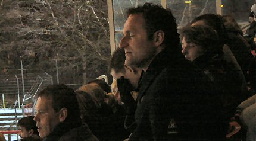
Een spion van PSV op de tribune.
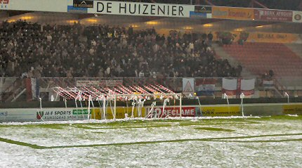
De sfeeractie van de Crazy-side bestond uit enkele honderden door
de club
beschikbaar gestelde plee-rollen, luide gezangen en een superkanonslag.
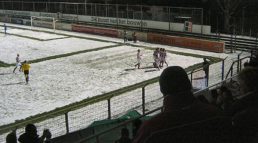
Na 23 min. scoort Marcel van der Sloot 1-0.
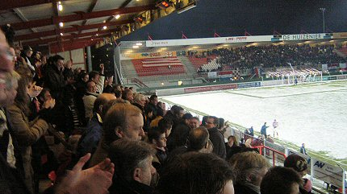
3000 toeschouwers in het "Ossche Kuipje".
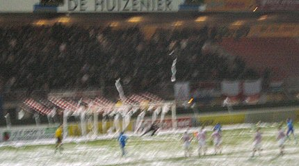
Nadat m.o.t.m. Mischa Rook een penalty heeft veroorzaakt schiet
Rick Hoogendorp namens RKC de gelijkmaker binnen, (41').
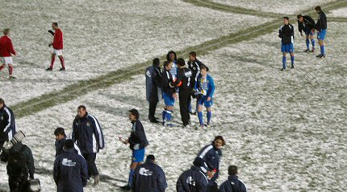
In de tweede helft vallen er geen doelpunten meer. Ook in de twee
maal
twee kwartier verlenging niet. De spelers van RKC bemoedigen hun
doelman Sinouh.
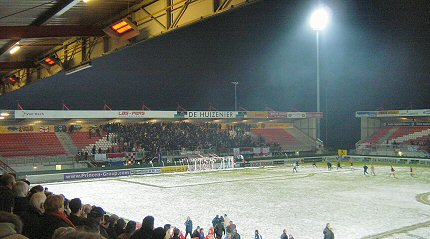
De strafschoppenserie is een thriller. Het loopt goed af voor
Top: 6-5 !!!
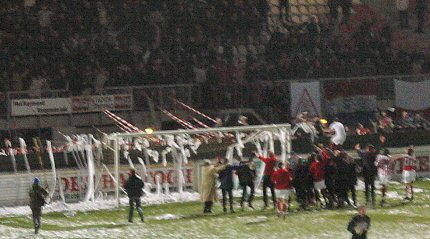
De spelers klimmen in de hekken van de harde kern.
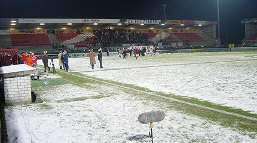
Ook Regillio Vrede die vanwege een hamstringblessure niet kon
meespelen
ging meedelen in de feestvreugde.
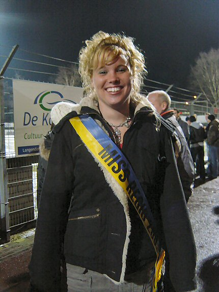
Hoewel het een prachtige wedstrijd was met veel doelpunten zien we hier
het absolute hoogtepunt van deze mooie bekeravond. Ze draagt de kleuren
van RKC, maar deze miss is echt uit de regio Oss.
Beste Miss Regio, mail svp naar
koempel@koempel.nl Ik heb je in het
feestgedruis niet meer terug kunnen vinden.
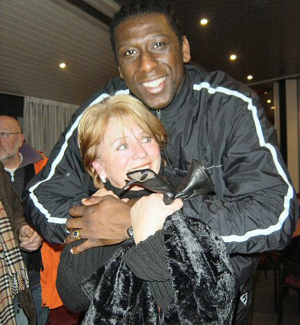
In het supportershome ontmoeten we Regillio Vrede die hier de ma van
Marc van Hintum (RKC) in zijn armen sluit.
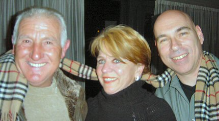
Pa en ma Van Hintum.
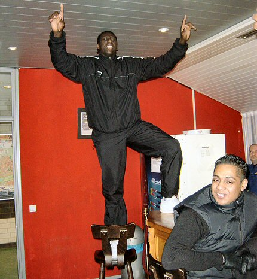
Vrede gaat aardig uit zijn bol als er plaatjes van Hazes worden gedraaid.
Wellicht een goede therapie opdat hij de kwartfinales van de Amstelcup
mee kan spelen.
Regillio en Top Oss bedankt voor de gastvrijheid en succes
in de kwartfinale
Amstelcup!
© Koempels Pleasure Dome